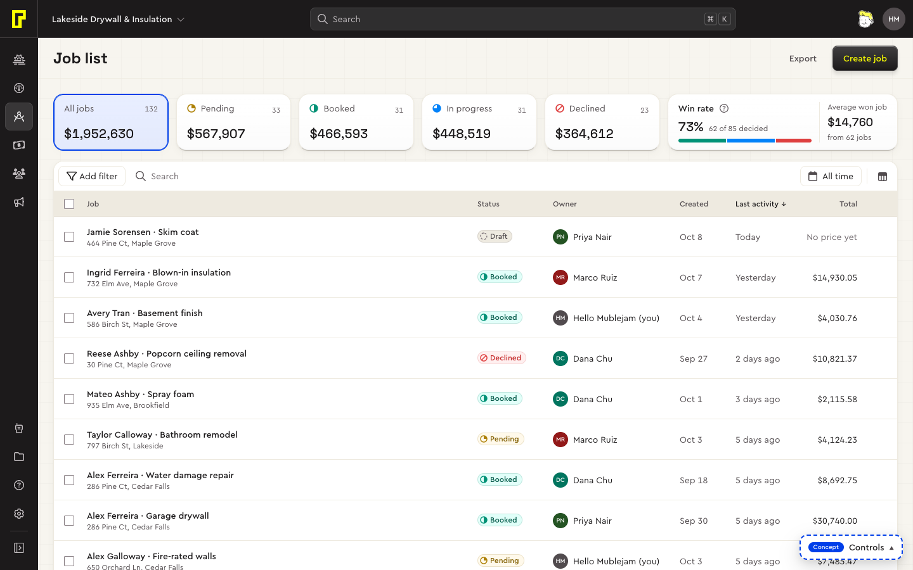
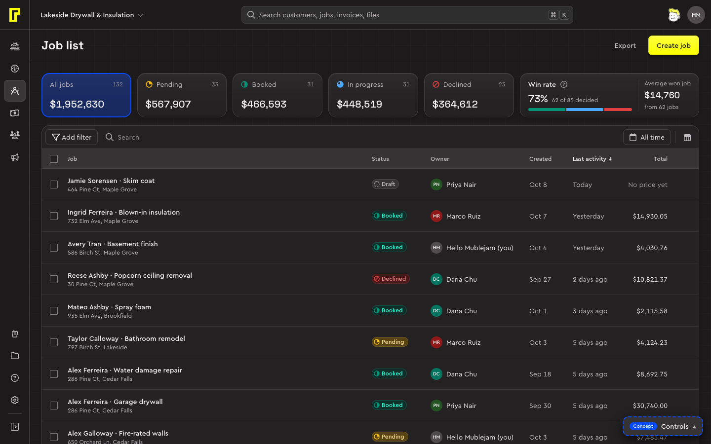
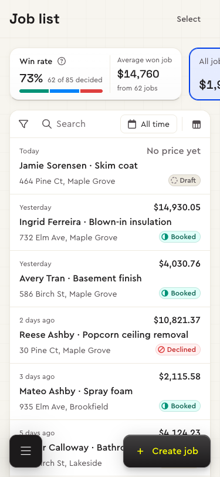
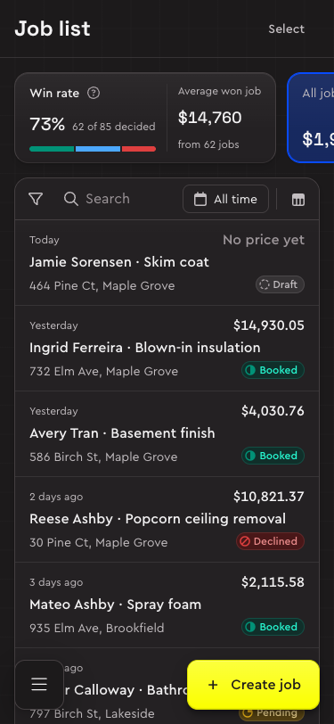

| Actions | ||||
|---|---|---|---|---|
Ingrid Ferreira · Blown-in insulation 732 Elm Ave, Maple Grove | Booked | $14,930.05 | ||
Reese Ashby · Popcorn ceiling removal 30 Pine Ct, Maple Grove | Declined | $10,821.37 | ||
Alex Galloway · Fire-rated walls 650 Orchard Ln, Cedar Falls | Pending | $7,485.47 | ||
Jamie Sorensen · Skim coat 464 Pine Ct, Maple Grove | Draft | No price yet |
Code
<section class="card list-panel">
<div class="table-wrap">
<table class="data-table">
<thead><tr>
<th class="data-table-select"><input type="checkbox" class="checkbox" aria-label="Select all" data-indeterminate></th>
<th data-primary><button type="button" class="data-table-sort">Job</button></th>
<th style="inline-size:6.5rem"><button type="button" class="data-table-sort">Status</button></th>
<th style="inline-size:7.5rem" data-numeric aria-sort="descending"><button type="button" class="data-table-sort">Total</button></th>
<th class="row-actions"><span class="visually-hidden">Actions</span></th>
</tr></thead>
<tbody>
<tr data-selected><td class="data-table-select"><input type="checkbox" class="checkbox" checked aria-label="Select Ingrid Ferreira · Blown-in insulation"></td><td data-primary><div class="cell"><div class="cell-main"><div><a class="data-table-link" href="#">Ingrid Ferreira · Blown-in insulation</a><div class="cell-sub">732 Elm Ave, Maple Grove</div></div></div></div></td><td><div class="cell"><span class="badge" data-status="booked" data-mark="half">Booked</span></div></td><td data-numeric><div class="cell">$14,930.05</div></td><td class="row-actions"><button type="button" class="button" data-variant="ghost" data-size="sm" data-icon-only aria-label="Actions" data-tip="Actions"><i data-icon="ellipsis" data-size="16"></i></button></td></tr>
<tr><td class="data-table-select"><input type="checkbox" class="checkbox" aria-label="Select Reese Ashby · Popcorn ceiling removal"></td><td data-primary><div class="cell"><div class="cell-main"><div><a class="data-table-link" href="#">Reese Ashby · Popcorn ceiling removal</a><div class="cell-sub">30 Pine Ct, Maple Grove</div></div></div></div></td><td><div class="cell"><span class="badge" data-tone="danger" data-mark="slash">Declined</span></div></td><td data-numeric><div class="cell">$10,821.37</div></td><td class="row-actions"><button type="button" class="button" data-variant="ghost" data-size="sm" data-icon-only aria-label="Actions" data-tip="Actions"><i data-icon="ellipsis" data-size="16"></i></button></td></tr>
<tr><td class="data-table-select"><input type="checkbox" class="checkbox" aria-label="Select Alex Galloway · Fire-rated walls"></td><td data-primary><div class="cell"><div class="cell-main"><div><a class="data-table-link" href="#">Alex Galloway · Fire-rated walls</a><div class="cell-sub">650 Orchard Ln, Cedar Falls</div></div></div></div></td><td><div class="cell"><span class="badge" data-status="pending" data-mark="quarter">Pending</span></div></td><td data-numeric><div class="cell">$7,485.47</div></td><td class="row-actions"><button type="button" class="button" data-variant="ghost" data-size="sm" data-icon-only aria-label="Actions" data-tip="Actions"><i data-icon="ellipsis" data-size="16"></i></button></td></tr>
<tr data-open aria-current="true"><td class="data-table-select"><input type="checkbox" class="checkbox" aria-label="Select Jamie Sorensen · Skim coat"></td><td data-primary><div class="cell"><div class="cell-main"><div><a class="data-table-link" href="#">Jamie Sorensen · Skim coat</a><div class="cell-sub">464 Pine Ct, Maple Grove</div></div></div></div></td><td><div class="cell"><span class="badge" data-status="draft" data-mark="dashed">Draft</span></div></td><td data-numeric><div class="cell"><span class="text-tertiary">No price yet</span></div></td><td class="row-actions"><button type="button" class="button" data-variant="ghost" data-size="sm" data-icon-only aria-label="Actions" data-tip="Actions"><i data-icon="ellipsis" data-size="16"></i></button></td></tr>
</tbody>
</table>
</div>
<div class="list-foot"><span class="list-foot-range">Showing 1–4 of 64</span><button type="button" class="button" data-variant="secondary" data-size="sm">Load 25 more</button></div>
</section>When to use
- Use a data table for a list of records people scan, sort, filter and open: jobs, invoices, vendor orders, customers, the catalog.
- Use the table card (
.card.list-panel) around it on a list page: it holds the toolbar, the table and the footer, and nothing else. The whole page is described on List. - Not for sheets you edit in place. Bolster's items and its estimate edit in cells and save together; the table doesn't do that (see Estimate).
- Not for a handful of facts about one record: those are the record's fields.
Anatomy
| Part | Class | What it is |
|---|---|---|
| Table card | .card.list-panel | A card that holds only data and clips its corners. |
| Toolbar | .list-toolbar | Add filter, search, the date range and display settings, then the count and the filter chips once something is set (Toolbar, Chip). |
| Select column | .data-table-select | A checkbox per row, and one in the header that selects all and shows mixed when some are ticked. Only on lists with bulk actions (D48). |
| Name cell | [data-primary], .cell-main | The slot (an avatar or a thumbnail, or nothing), the name as the row's link, and a detail line under it (.cell-sub). |
| Columns | th, .data-table-sort | Each header is a sort button with room kept for its arrow; widths come from the headers. |
| Row menu | .row-actions | One ··· button at the row's end, showing on hover and focus; the row's actions in a menu. |
| Footer | .list-foot | The range shown and Load more. |
Rows
A row opens with one click
The name is a link, stretched over the row by CSS (D17). One click anywhere on the row opens it, as does Enter on the name, and a screen reader's list of links lists every row. What opens is the list's choice, one of two (D30): a peek, the record beside the list (a side sheet below 1280), for lists people triage; or open, the record's own page or workspace, for lists people work in. The live product's rows were divs: one click selected, a double click opened, and a keyboard could do neither.
Checkboxes, the row menu and anything else that acts sit above the link, so clicking them never opens the row.
No buttons on rows
A row carries no buttons (D43). Its next step (Send, Book, Archive) leads the record's actions and the row's ··· menu, after Open; it's never a column of buttons.
States
A row that is ticked and open keeps the selection's colour and shows it's open by its edge. Keyboard focus on the row's link draws the focus ring around the whole row.
Selecting
Selecting is a checkbox in the first cell, and the list has one only when it has bulk actions (D48). Ticking a row brings up the floating bar with what can be done to all of them; the header checkbox selects all. On phones selecting is a mode: Select in the page header, or a long press on a row (I6, Bulk actions).
Columns
- Each column has a type (money, a date, a status, a person, a name), and the type decides its alignment, format, which way it sorts first and its filter (D44). Pages don't set those one by one.
- Numbers sit right in tabular figures (
data-numeric). Their header's sort arrow sits on its left, so the label doesn't shift. - Sorting: one column at a time. A header is a button; the sorted one says so in
aria-sortand shows its arrow, and the first press sorts the type's way: biggest, newest and most flagged first; names and words from the top. Every header keeps room for the arrow, so sorting never changes a width. - Widths come from the headers, never from the rows on screen, so sorting or loading more can't move a column (I13). A cell's content has no width of its own: when the columns don't all fit, long values end in “…”.
- Priority: the name is first and never hidden, then the key figure and the status; the rest leave by priority as the screen narrows and beside an open record. In plain markup,
data-hide-below="md"or"lg"hides a column under 768 or 1024. - Pinned and scrolling: when the columns don't all fit, the table scrolls sideways in its card with the checkbox and the name pinned on the left; a rule marks their edge once scrolled, and the right edge fades while there's more.
- The header follows the page: it stays under the bars as the page scrolls, moved by the scroll itself where the browser can, so it never trails behind (D38, Page scrolling).
Kinds
What a row holds, as a column of small icons: a vendor order's labour and materials. A row's icons share one tooltip that names them together, in their order (D52, D53).
| Vendor order | Contains |
|---|---|
ABC Supply VEN-1132 · Blown-in insulation | |
Lowe's VEN-1131 · Spray foam |
Code
<section class="card list-panel" style="max-inline-size:32rem"><div class="table-wrap"><table class="data-table">
<thead><tr><th data-primary>Vendor order</th><th>Contains</th></tr></thead>
<tbody>
<tr><td data-primary><div class="cell"><div class="cell-main"><div><a class="data-table-link" href="#">ABC Supply</a><div class="cell-sub">VEN-1132 · Blown-in insulation</div></div></div></div></td><td><div class="cell"><span class="cell-kinds" role="img" aria-label="Labor and materials" data-tip="Labor and materials"><i data-icon="hard-hat" data-size="14"></i><i data-icon="box" data-size="14"></i></span></div></td></tr>
<tr><td data-primary><div class="cell"><div class="cell-main"><div><a class="data-table-link" href="#">Lowe's</a><div class="cell-sub">VEN-1131 · Spray foam</div></div></div></div></td><td><div class="cell"><span class="cell-kinds" role="img" aria-label="Materials" data-tip="Materials"><i data-icon="box" data-size="14"></i></span></div></td></tr>
</tbody>
</table></div></section>Groups and density
- Group by (in display settings, where a list offers it) puts a group row before each group: a toggle with the group's name, its count and, where the list has money, its total. A group folds away with its toggle.
- Density: comfortable is the default, 64px rows with a detail line; compact is 40px and drops the detail line.
| Job | Total |
|---|---|
Mykola Khvylovy · Roof and kitchen refresh 18 Lakeview Rd, Maple Grove | $38,950.00 |
Alex Galloway · Fire-rated walls 650 Orchard Ln, Cedar Falls | $7,400.00 |
Code
<section class="card list-panel"><div class="table-wrap"><table class="data-table">
<thead><tr><th data-primary>Job</th><th style="inline-size:7.5rem" data-numeric>Total</th></tr></thead>
<tbody>
<tr class="group-row"><td colspan="2"><div class="group-head"><button type="button" class="group-toggle" aria-expanded="true"><i data-icon="chevron-down" data-size="16"></i><span class="badge" data-status="pending">Pending</span></button><span class="group-meta">2 jobs · $46,350.00</span></div></td></tr>
<tr><td data-primary><div class="cell"><div class="cell-main"><div><a class="data-table-link" href="#">Mykola Khvylovy · Roof and kitchen refresh</a><div class="cell-sub">18 Lakeview Rd, Maple Grove</div></div></div></div></td><td data-numeric><div class="cell">$38,950.00</div></td></tr>
<tr><td data-primary><div class="cell"><div class="cell-main"><div><a class="data-table-link" href="#">Alex Galloway · Fire-rated walls</a><div class="cell-sub">650 Orchard Ln, Cedar Falls</div></div></div></div></td><td data-numeric><div class="cell">$7,400.00</div></td></tr>
<tr class="group-row"><td colspan="2"><div class="group-head"><button type="button" class="group-toggle" aria-expanded="false"><i data-icon="chevron-down" data-size="16"></i><span class="badge" data-status="booked">Booked</span></button><span class="group-meta">3 jobs · $27,150.00</span></div></td></tr>
</tbody>
</table></div></section>Load more
The footer shows the range on screen and loads the next 25. Rows also keep coming as the footer nears the screen, so most people never press it; the button stays for keyboards and short lists, and pressing it from the keyboard moves focus to the first new row. Loading more never moves a column. A grouped list shows every row in its groups, with no footer.
Load more sits in the card's corner, 8px in, so its corners share the card's (D35); the range lines up with the cells.
Phones
Below 768 a row becomes an item with four corners (D32): the id and a date on a quiet overline top left, the key figure top right, the name across the full width at 16px (wrapping to two lines rather than being cut), then where (an address, a job or a unit) bottom left and the status bottom right. There's no checkbox column and no header; avatars drop, and a list with photos keeps them down the left. Each cell says which corner it fills with data-m.




Usage
Accessibility
- A real
<table>with a header row. A hidden caption names the list and its sort (“Job list, sorted by last activity, descending”). - Tab reaches each row's link and checkbox; Enter opens, Space ticks. The focus ring goes around the row.
- Each checkbox is named after its row (“Select Garage drywall”); the header's is “Select all” and shows mixed when partly ticked.
- Sorted headers carry
aria-sort; the arrow is drawn by CSS. - The row menu's ··· is named (“Actions”) and has a tooltip (D52).
- While rows load, the table is
aria-busy="true"(Empty, loading and error).
Code
| Class or attribute | On | What it does |
|---|---|---|
.data-table-link | the name's <a> | Stretches over the row |
.data-table-select | th, td | The checkbox column, 40px |
.data-table-sort | a header's <button> | Sorts; the arrow follows aria-sort on the th |
data-numeric | th, td | Right-aligned, tabular figures |
data-primary | th, td | The name column, pinned when the table scrolls sideways |
data-hide-below | th, td | md or lg: hidden under 768 or 1024 |
data-selected, data-open | tr | Ticked; its record open beside the list |
data-density | table | compact: 40px rows, no detail line |
data-m | td | Its corner on a phone: over title trail where badge sub flags |
.cell, .cell-main, .cell-sub, .cell-person, .cell-muted, .cell-kinds | inside cells | A cell's content: truncates, the name block, its detail line, a person, a quiet value, kinds |
.list-foot, .list-foot-range | after the table | The footer: the range and Load more |
<table class="data-table">
<thead><tr>
<th class="data-table-select"><input type="checkbox" class="checkbox" aria-label="Select all"></th>
<th data-primary><button type="button" class="data-table-sort">Job</button></th>
<th aria-sort="descending"><button type="button" class="data-table-sort">Last activity</button></th>
<th data-numeric><button type="button" class="data-table-sort">Total</button></th>
</tr></thead>
<tbody><tr>
<td class="data-table-select"><input type="checkbox" class="checkbox" aria-label="Select Garage drywall"></td>
<td data-primary><div class="cell"><div class="cell-main"><div>
<a class="data-table-link" href="jobs/1042">Garage drywall</a><div class="cell-sub">464 Pine Ct, Maple Grove</div>
</div></div></div></td>
<td><div class="cell"><span class="cell-muted">Today</span></div></td>
<td data-numeric><div class="cell">$12,400.00</div></td>
</tr></tbody>
</table>Tokens
| Token | Preview | Value | Use |
|---|---|---|---|
--color-surface-hover | Lightcement-200Darkpitch-black-900 | ||
--color-surface-current | Lightcement-300Darkpitch-black-900 | the row whose record is open beside the list | |
--color-surface-selected | Lightmix(blue-print-100 50%, flame-white)Darkmix(blue-print-700 35%, pitch-black-night-900) | ||
--color-surface-group | Lightcement-100Darkcement-night-900 | ||
--color-surface-header | Lightcement-400Darkpitch-black-900 |
| Token | Preview | Value | Use |
|---|---|---|---|
--color-highlight-search | Lightyellow-300Darkmix(yellow-700 40%, transparent) | search hits: the matched letters on Bolster's highlighter yellow | |
--color-line-subtle | Lightcement-400Darkpitch-black-900 | ||
--color-line-default | Lightmix(cement-500 50%, pitch-black-200)Darkpitch-black-800 |
Every variant and state
Its specimen, live: the same markup and CSS a page uses, working (point, press, type), in this page's theme.
system/specimens/data.html, the component's workbench · Open it on its ownsystem/specimens/table-card.html, the component's workbench · Open it on its ownWhat's still open
- No editable cells: Bolster's sheets (items, the estimate) edit in cells and save together, which the table doesn't do (the bolster-page skill sends those away).
- No tree rows in the system: the estimate concept's assemblies and items are its own (draft).
Decisions and contracts
- D17Lists are tables with row linksDecided
- D30A row click either peeks or opensDecided
- D32Phone rows have four corners and an unbroken nameDecided
- D38The column header follows the page on the scroll itselfDecided
- D43No buttons on rows: a row's next step leads its recordDecided
- D44Column types and priorities are decided, and the renderer follows them to the letterDecided
- D48Checkboxes only where there are bulk actionsDecided
- D35Nested corners share a centreDecided
- I6Opening and selecting list rows
- I13Live areas keep their shape